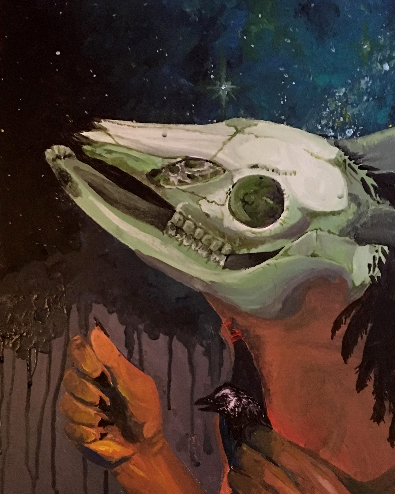
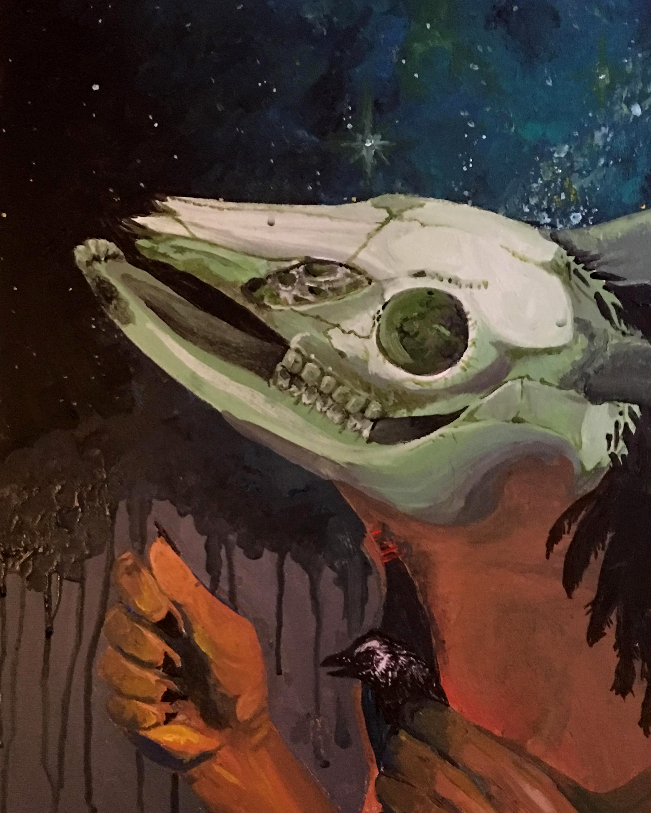
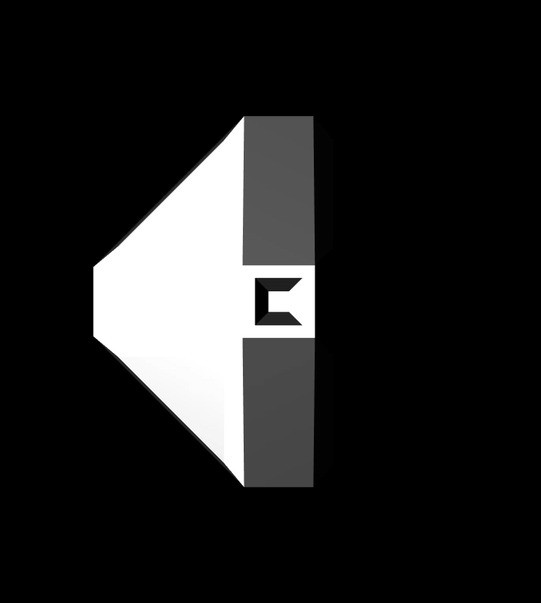
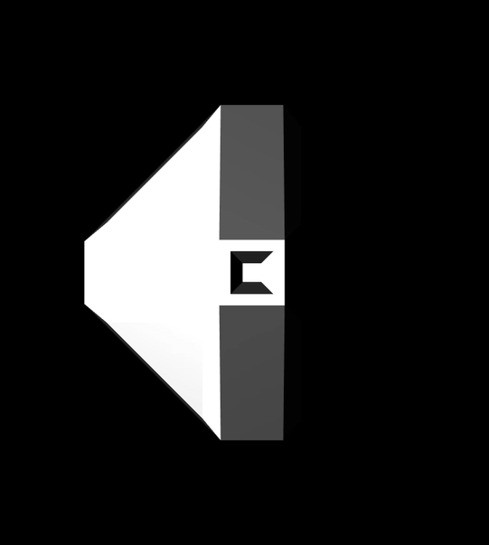

Hi
I'mAnastasiaHossain
Designer


I’m a Vancouver based web designer and illustrator with a background in biology and technology that’s working on bringing brands and ideas to life through aesthetic components. Focusing on user intractability, interfaces and ease of access, and at the same time allows me to develop a digital experience which creates lasting effects on users.


 



 
